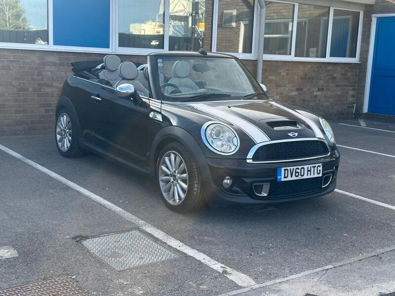
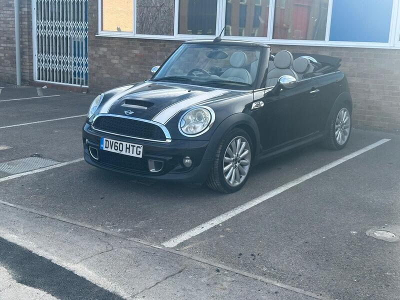
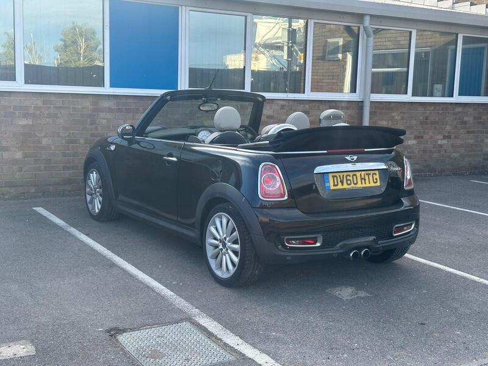
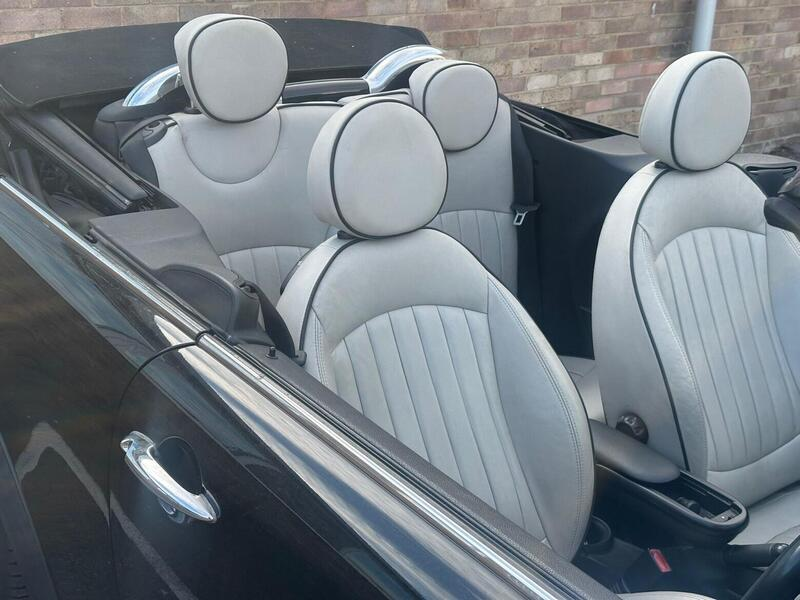

Seller photos from the AutoTrader ad.
MINI Convertible 1.6 Cooper S
A tidy turbo Cooper S near the south coast. Budget for a second key.
Key facts
| Price | £2,950 |
|---|---|
| Year | 2010 |
| Miles | 81,000 |
| Model | MINI Convertible 1.6 Cooper S |
| Colour | Black |
| Registration | 2010 (60 reg) |
| Owners | 7 owners |
| Service history | Not stated |
| MOT (AutoTrader ad) | 13 Apr 2027 (ad) |
| Seller | Private |
| Location | Southampton |
| From GU7 | 40 mi (AutoTrader) |
| Listed on AutoTrader | 13/10/2026 |
| Checked | 15 October 2026 |
Why buy it
- Service history and HPI clear (ad)
- Cooper S with heated seats and Harman Kardon speakers (ad)
- MOT to April 2027
Things to check
Only 1 key (ad): budget for a spare
Pre-2011 turbo Prince engine: listen for chain rattle, check for oil leaks
7 owners
- MINI Convertible R52/R57 weak spots
Not flagged as a major issue in our sources; check for water ingress via roof drains and seals. R52 CVT auto fails (avoid); supercharged R52 power-steering pump; pre-Nov 2011 Prince timing-chain tensioners; roof hydraulics £395–495 average repair, R57 roof from ~£1,735.
Seller says (extract)
“Mini Cooper S Convertible with 81,000 miles, HPI clear, 1 key, service history and MOT until April 2027. Comes with heated seats, drives great, is good on fuel and cheap to run and insure. A great little car that's been well looked after and is ready to drive away.…”